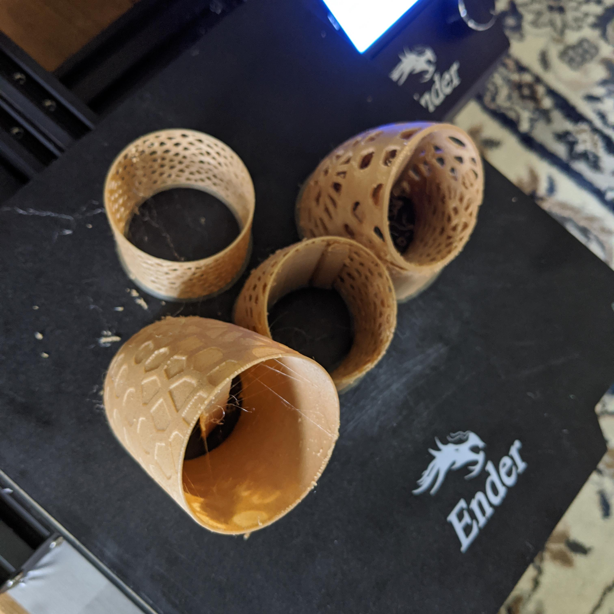
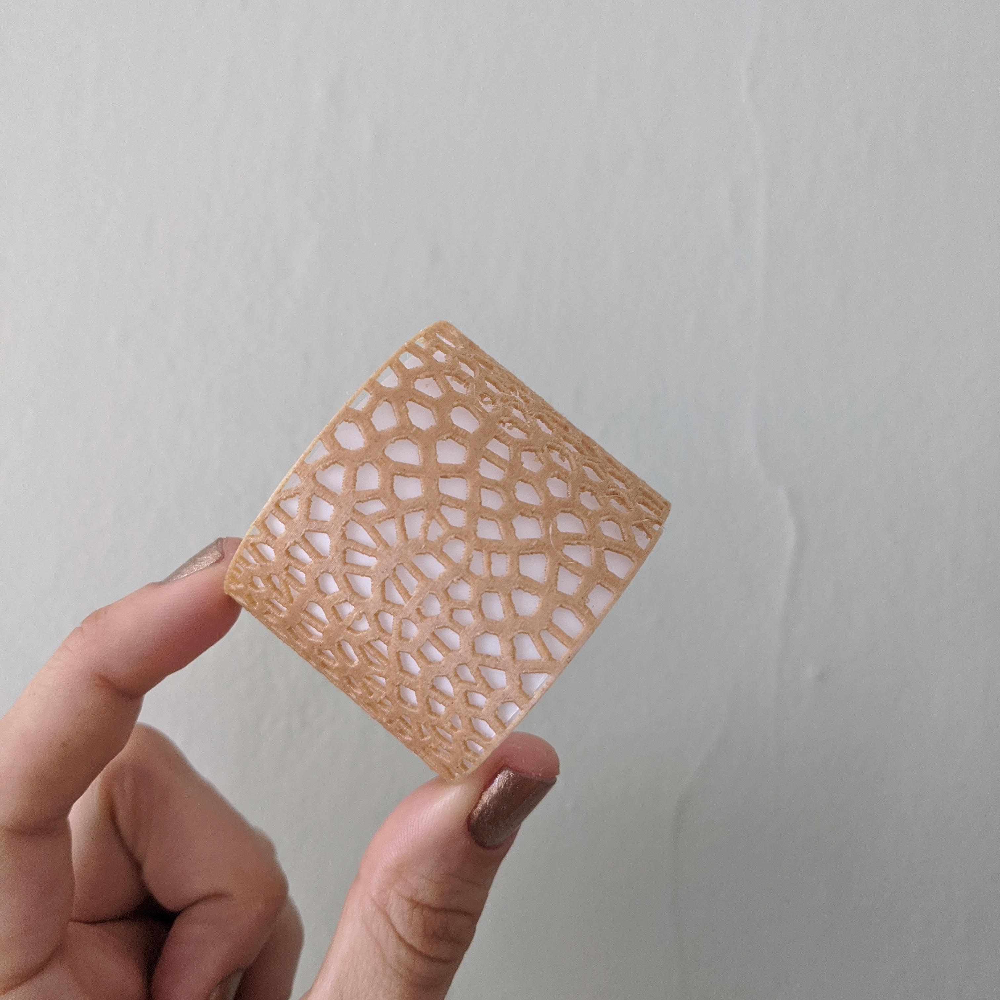
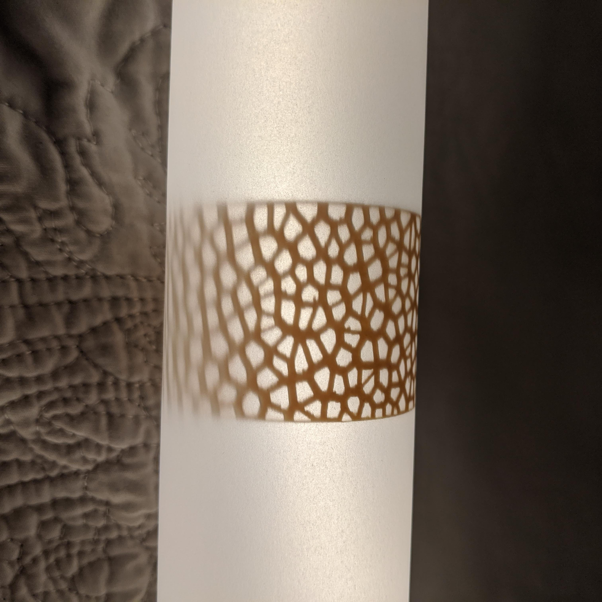
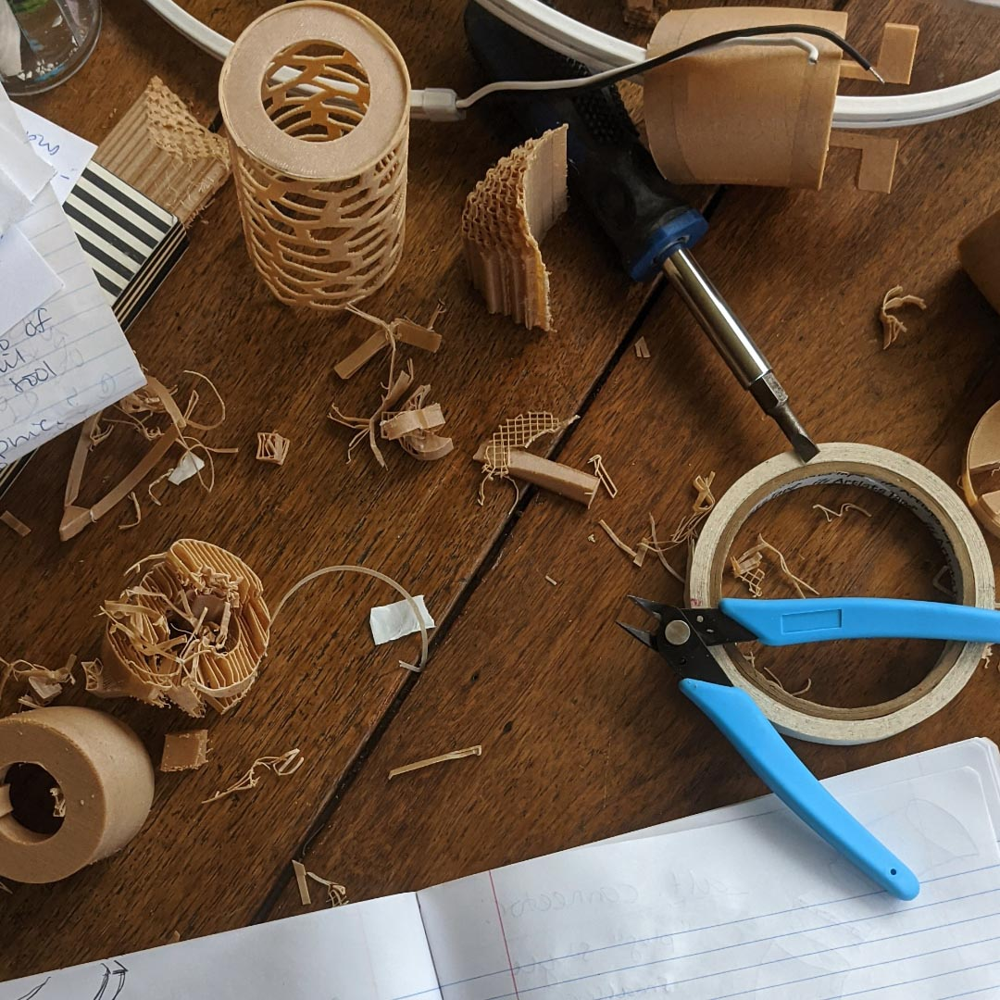
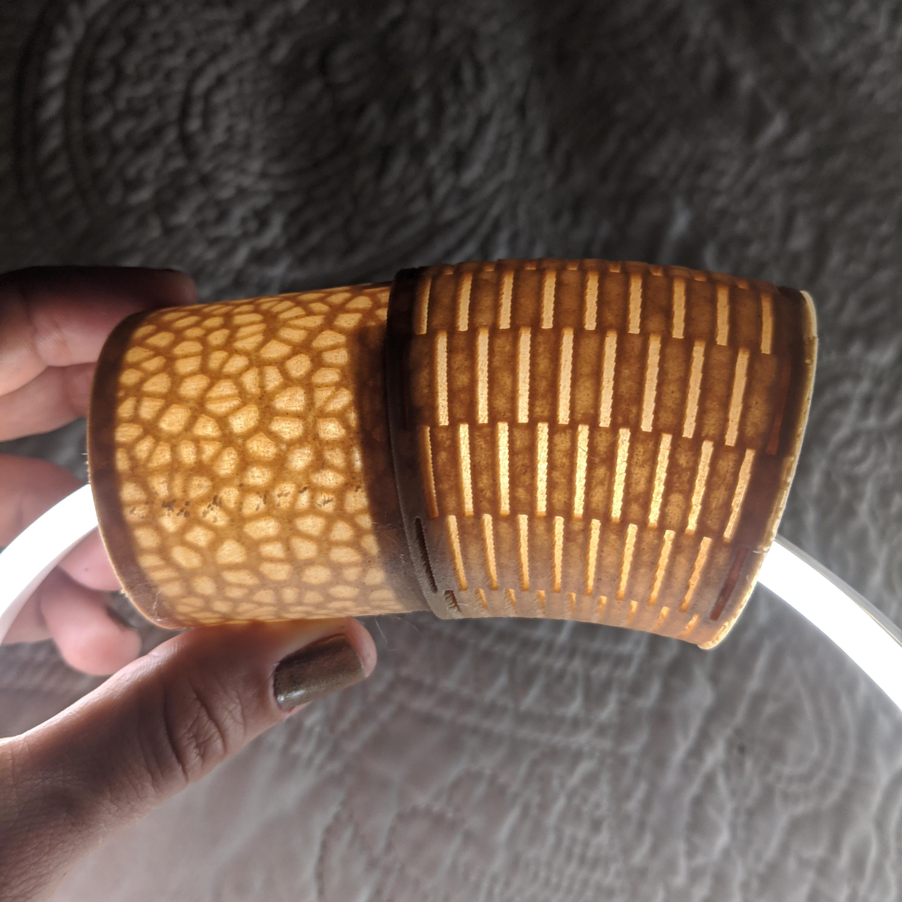

For my final project, I set out to make a modular light piece. I went through many iterations, but you can find my final files

First, I built the base curves in rhino. I created torus shapes at the diameters I planned, then sliced them into the desired angles. I’d use these shapes to apply my textures to.


First I played with the light’s texture. Using grasshopper, I wrote a definition to create a voronoi texture and wrap it around a surface (thanks
After I did some of my own research and came up empty handed, I reached out on slack! Prof. Nadya suggested my final fix: just bake the texture’s curves- don’t worry about extruding it in grasshopper. In Rhino, use flow-along-surf to wrap the texture around your desired shape. “Slice” cuts the texture out, then I used offset to make it any thickness I want! Tada! I went crazy making models testing various patterns and depths.
Finally! Some prints!




I tested the prints with light, along with different “shade” options: canvas, tissue paper, and vellum. The canvas was too thick, and the tissue paper too flimsy. The built in shade worked well to diffuse the light, but I didn’t like the texture the voronoi cells extruded on the outside of the shade- it looked unfinished. I liked vellum, but it would require a lot of work by hand to nicely fit the curved pieces.





I decided to go with the built-in shade, but to try and hide it from the viewer. I wanted to diffuse the light of the LED while having a quality “surface finish.” Based on the aesthetics and offset tests, I planned to offset the lunchbox texture 2mm and the “shade” 0.5mm.
I chewed on how to connect these light pieces for awhile before coming up with the “lock and twist” idea. I liked it because it was hidden, easy to construct, and doubled as a way to secure the LED in place.
The first print came out quite clunky- and, the infill made the arms very fragile, but, the idea worked! I made sure to test the supports, as well. I was worried an automatic setting wouldn’t cut it- but the “only on buildplate” setting worked great! The “everywhere” option was impossible to remove the supports.


I refined it by paring down on the size, minimizing the stopper on the inside, and made slight adjustments to the connection angle. I set the infill to 100 to combat the fragile arms, and also figured the shorter size would help, too.
When testing the connection mechanism on my angled pieces, I discovered the need for custom supports. Previously, I’d been generating supports at a 45 degree angle and only over the buildplate (otherwise, I found they were impossible to remove). By restricting the supports to only over the buildplate though, the arms on my 45 degree angle and 22.5 degree angle pieces weren’t supported enough during the print. I tried a couple methods of making my own supports. Some were huge, some were too close to the print and stuck. Here’s one failed support:

The supports that worked were right-angle triangles. Making the triangle this shape helped me keep track of the “45 degree angle/supports rule.”


I had to fiddle a bit with aligning the top connectors on the 45 and 22.5 degree pieces, but otherwise, it was smooth sailing finishing the pieces! I applied my texture to the original surfaces I built, then used boolean union to connect the textured cylinder with the top and bottom connection pieces. Up until the last moment, I was caught between using the voronoi or lunchbox texture (see photos below!) Ultimately, I opted for the lunchbox to match my original inspo. The printer’s going now! More photos to come of it all put together!!

